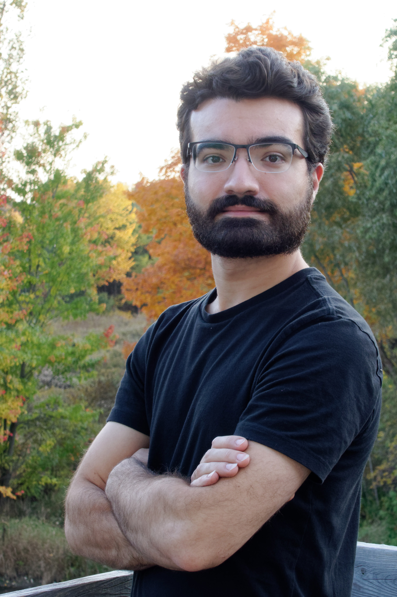

I was born in 1998, in Toronto at Women's College Hospital. I attended St. James elementary school and St. Thomas Aquinas secondary school. I was briefly in the Engineering program at Western University, before deciding it wasn't for me. I like building things, but I did not want to do math all day.
 I then came to Georgian College and enrolled in the BBML program, of which I completed about three semesters before transferring to York University's Economics program. Ironically, I still ended up in a program where I did math all day.
I completed my degree in Economics this summer, and recently started the CMPA program at Georgian College. I have some amateur experience in programming, but have always had trouble taking my skills to the next level on my own. I'm hoping that I can grow my abilities and gain experience through the co-op periods, then start a career in programming.